Plotting gallery
Each figure below is an unedited output of one public plotting routine. Run
python docs/make_plot_gallery.py to regenerate all of them. The
transdimensional figures come from a four-chain PCAT run on the simulated
two-line Voigt spectrum of examples/voigt_spectral_line_catalog (20,000
sweeps per chain, half discarded as burn-in), the fixed-dimensional figures from
a four-chain run on a correlated bivariate Gaussian, and the lens figures from
the simulated Roman/WFI strong-lens benchmark. All data are simulated.
Sampler operation
pcat.plotting.plot_sampler_overview() writes every view in this section
and the next that applies to a run; pcat.sampling.sample() calls it for
each run with final plots enabled.
pcat.plotting.plot_proposal_ledger() follows each move type through
burn-in and sampling and summarizes its acceptance after burn-in.

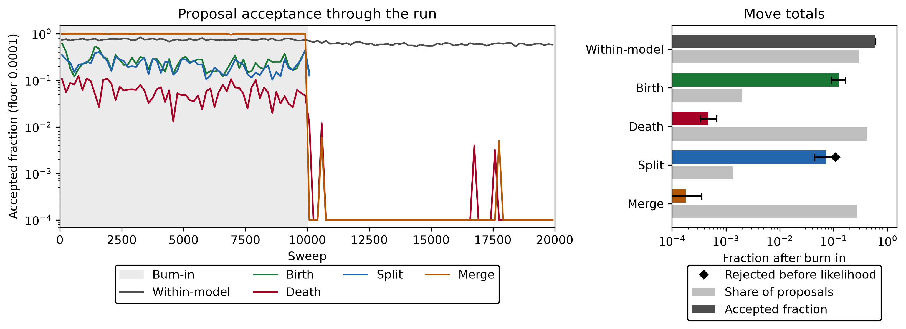
pcat.plotting.plot_acceptance_decomposition() splits each log
acceptance ratio into the posterior change, the move-selection ratio, and the
split/merge Jacobian.

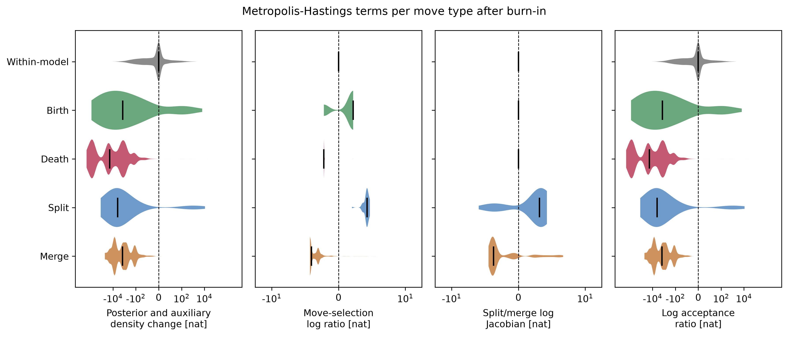
pcat.plotting.plot_compute_budget() locates where each move spends its
wall time.

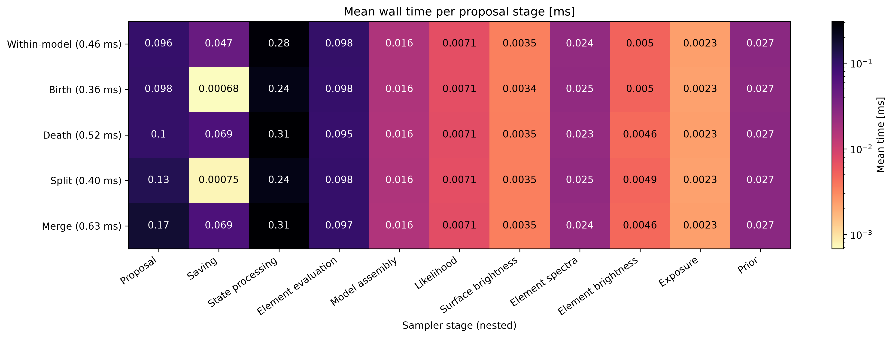
Catalogs and fits
pcat.plotting.plot_catalog_trace() draws every element of every retained
catalog of one chain, so births, deaths, splits, and merges appear as tracks.

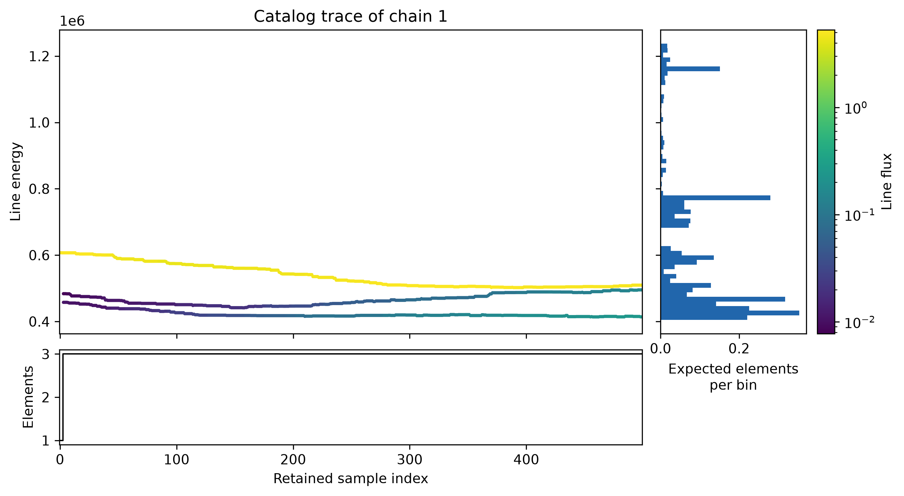
pcat.plotting.plot_posterior_predictive() compares the data with data
replicated from the posterior.

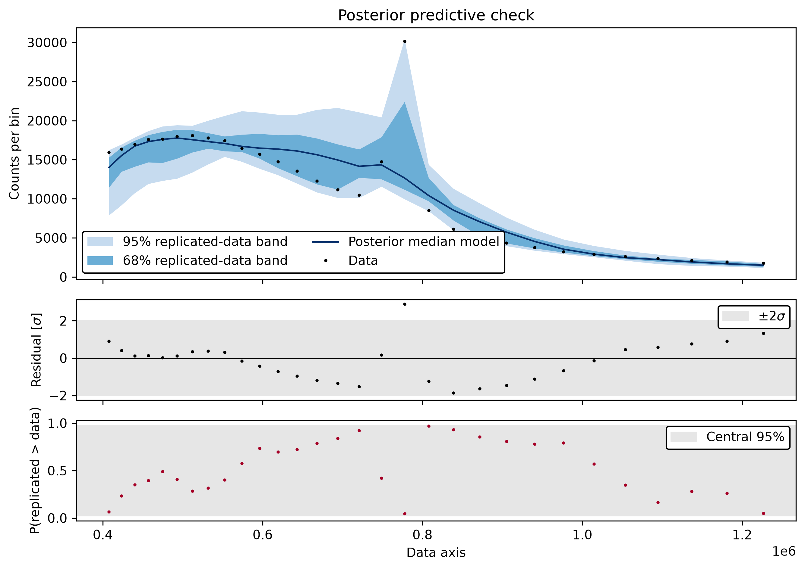
pcat.plotting.plot_lens_image_fit() and
pcat.plotting.plot_lens_parameter_recovery() summarize one simulated
Roman/WFI lens fit.

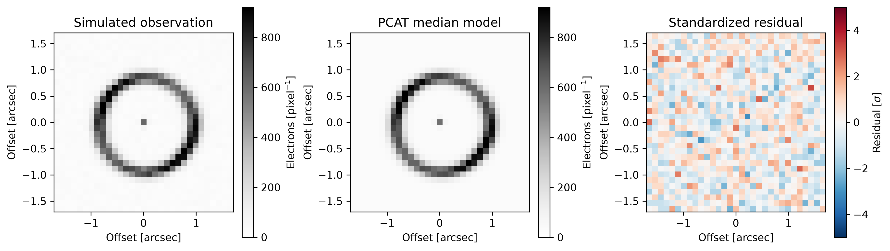

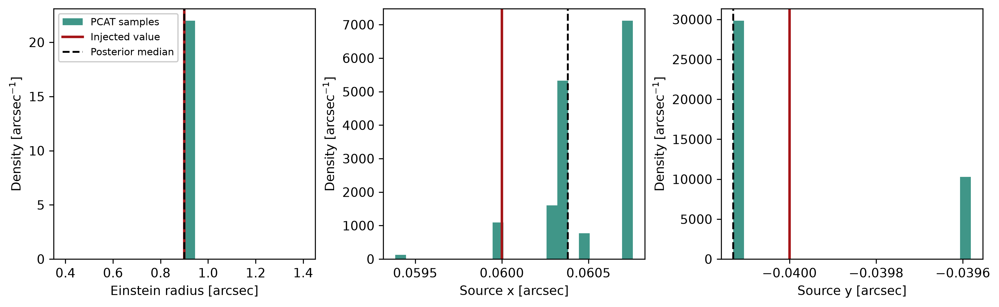
pcat.plotting.plot_detection_diagnostic() summarizes perturber detection
over a simulated lens population.

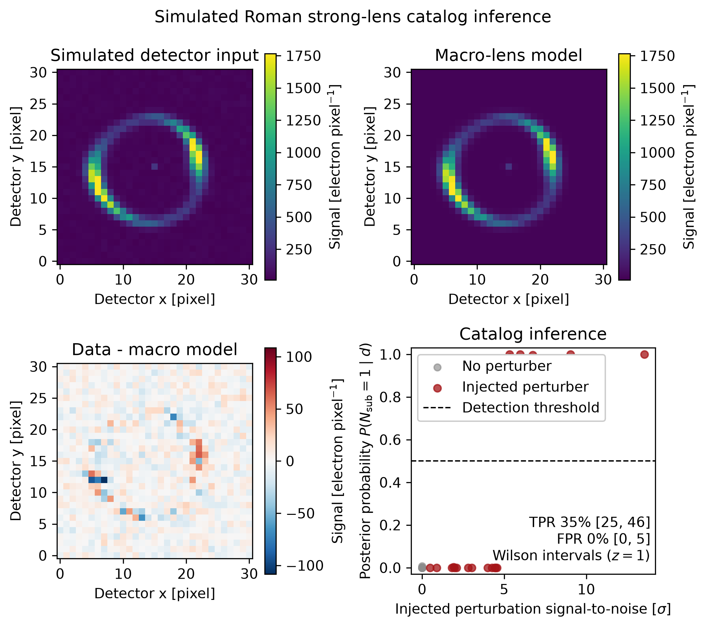
Convergence
pcat.plotting.plot_posterior_convergence() writes one set of figures per
run. The transdimensional run adds catalog-size diagnostics.

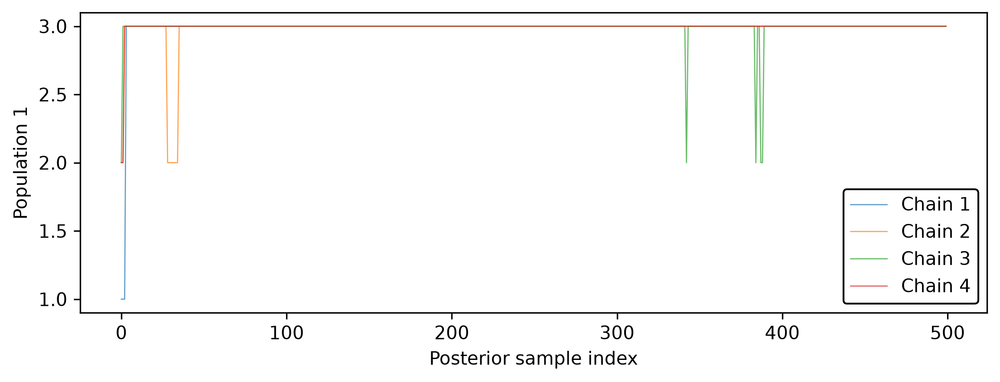

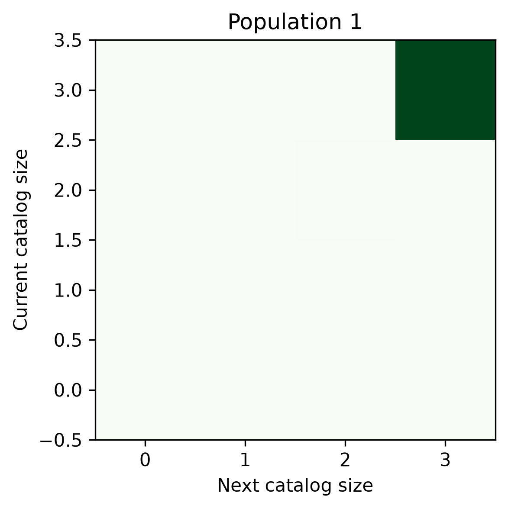

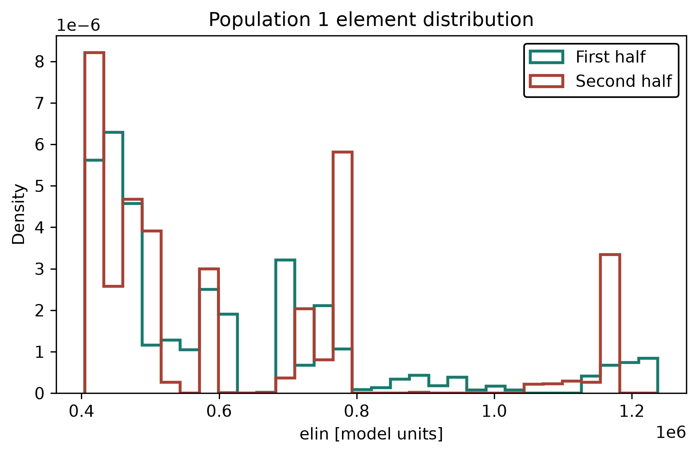

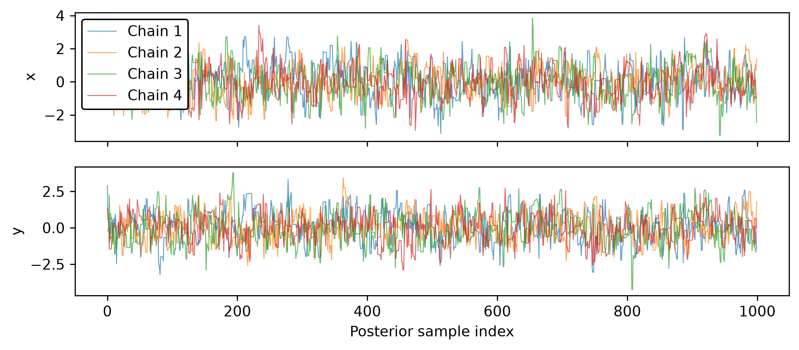

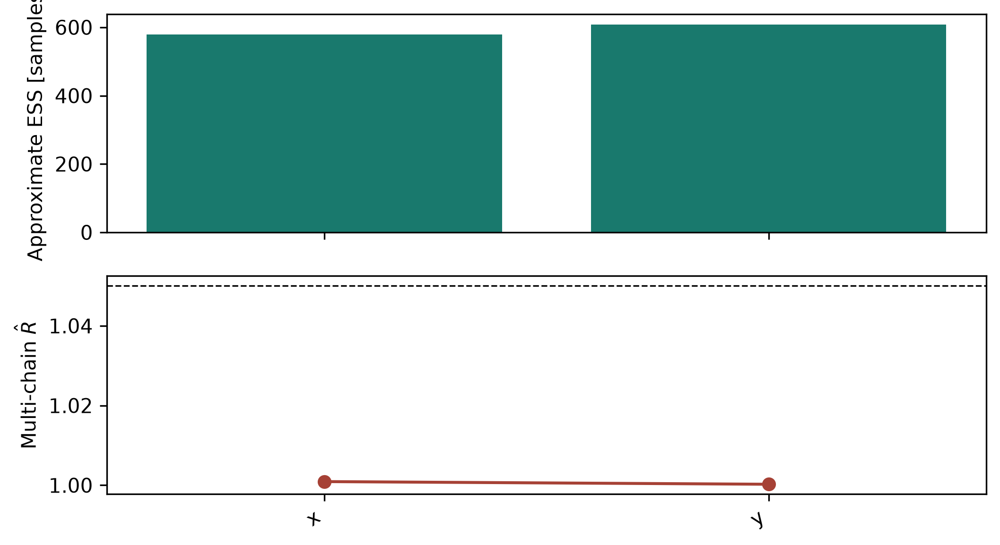
pcat.plotting.plot_gelman_rubin() histograms the potential scale
reduction factor of the model in every data bin, and
pcat.plotting.plot_autocorrelation() plots one autocorrelation sequence.

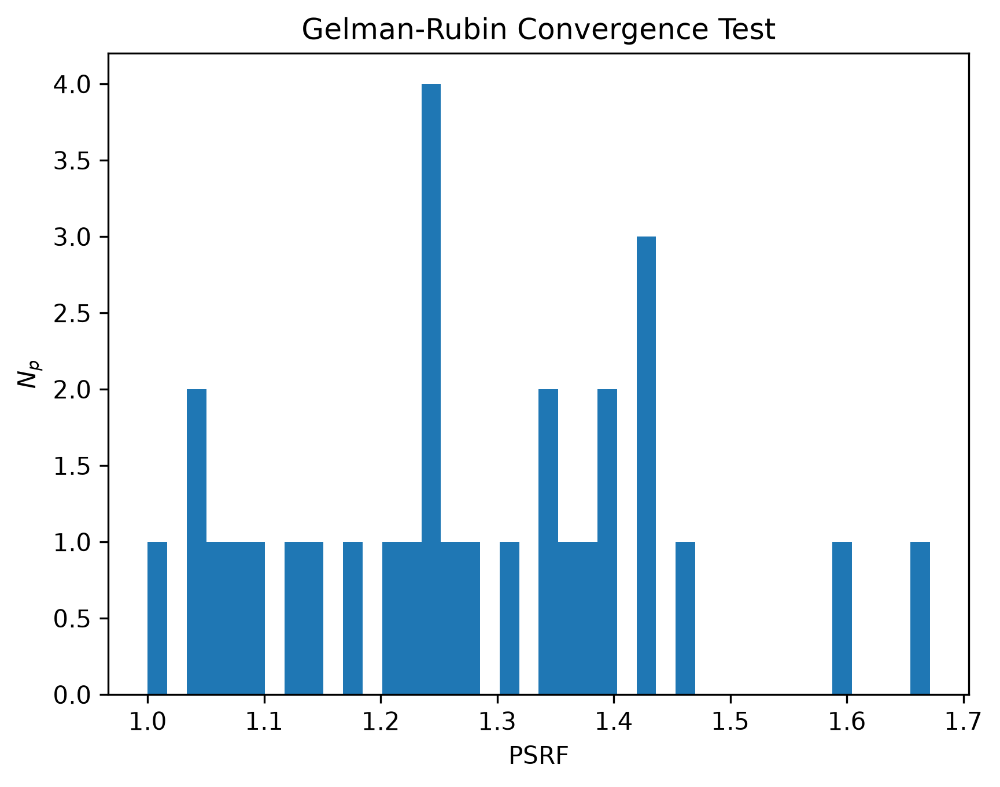

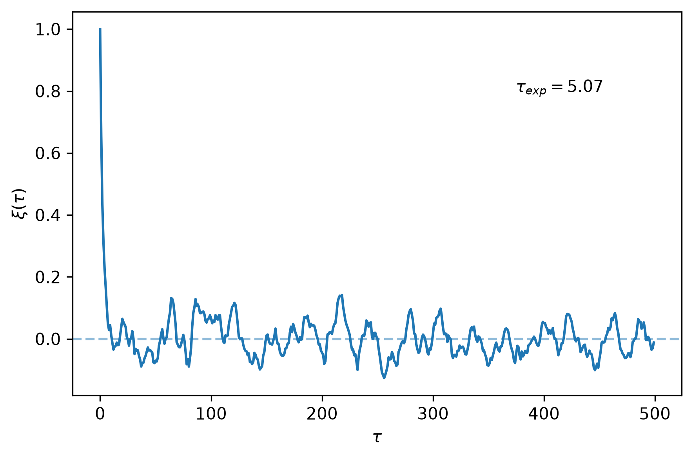
Posterior projections
pcat.plotting.plot_grid() draws all one- and two-parameter projections,
here with the injected values marked.

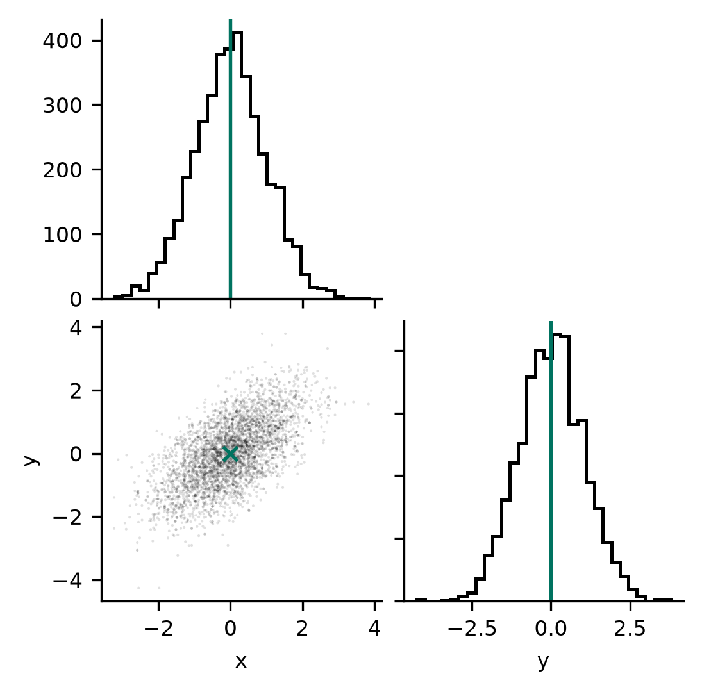
pcat.plot_population_grid() compares labeled sample populations.

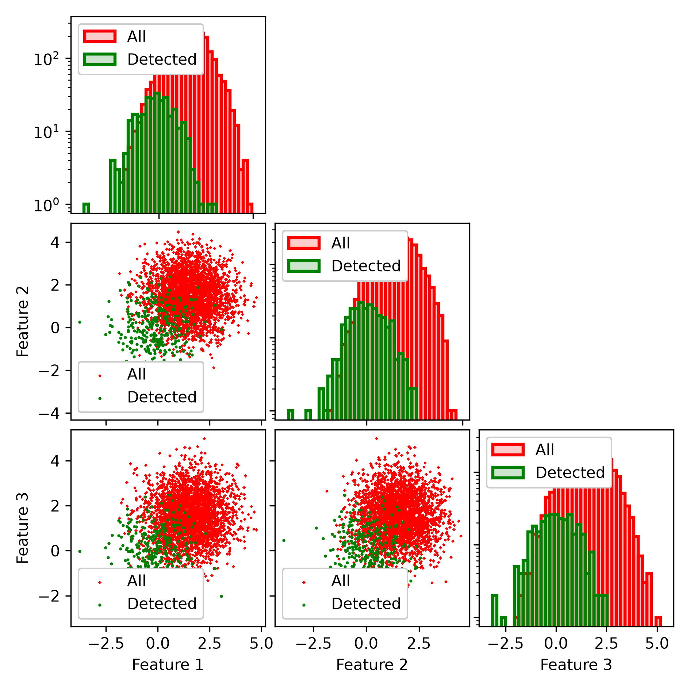
Animations
pcat.plotting.make_image_sequence_animation() animates images with a
shared stretch, here lensed arcs from six posterior draws.

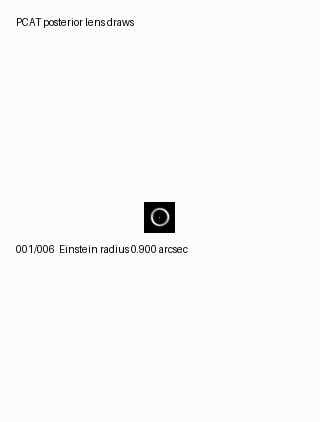
pcat.plotting.make_posterior_animation_collage() combines the posterior
frames of several examples; examples/run_all_examples.py writes the
collage shown on the PCAT documentation page.